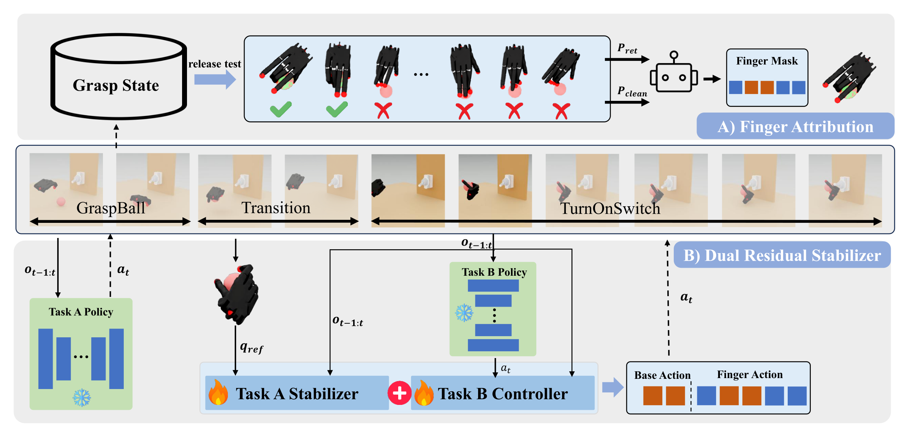
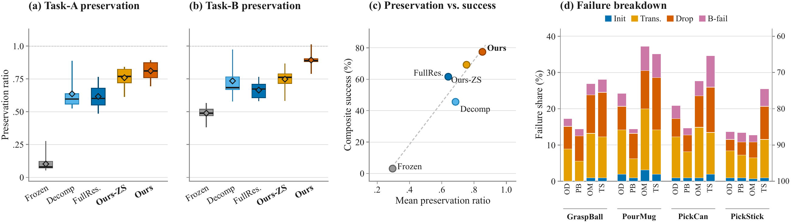
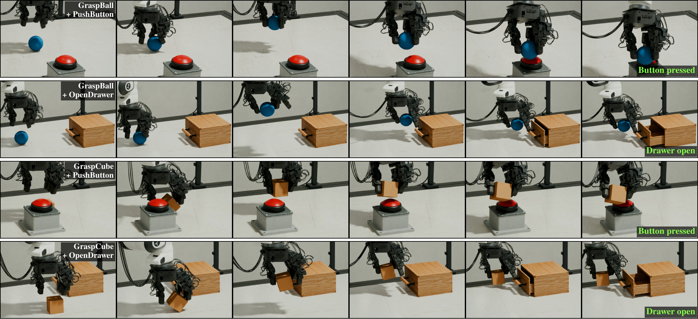
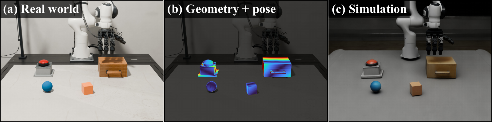

Retention
Policy reuse · Dexterous manipulation
DexCompose in Three Minutes
From frozen single-task policies to 16 compositions, three-skill sequences, and Franka–LEAP deployment.
Three-minute overview with English narration and captions.
Abstract
Dexterous manipulation policies can solve individual skills, but composing them to perform multiple tasks with a single hand remains difficult. Different tasks often compete over the same action dimensions, causing destructive interference between preserving an existing manipulation outcome and executing a new one. We propose DexCompose, a role-aware residual composition framework that enables the reuse of pretrained dexterous policies through explicit finger-level action ownership.
Given two pretrained full-hand policies, DexCompose first collects successful post-task states from the first skill and performs release tests over candidate finger masks to estimate which fingers are necessary for maintaining the established held state. It then trains a bounded residual stabilizer for task preservation and a context-aware residual that adapts the frozen downstream policy only within the action subspace assigned to the new task.
We evaluate the framework on 16 composite dexterous manipulation tasks spanning four object-retention skills and four downstream interactions. Our method achieves 77.4% average composite success, and ablation studies confirm that structural action ownership combined with dual asymmetric residuals is more effective than conventional policy chaining or unmasked residual correction.
Method
DexCompose treats policy composition as an action allocation problem at the embodiment level. The framework discovers which fingers must preserve Task A, releases redundant fingers for Task B, and composes the two frozen policies using residual modules that are restricted to their assigned action subspaces.

Finger Attribution
Successful Task-A hold states are replayed while candidate finger subsets are released. A task-aware LLM selector balances retention, clean release, and residual dexterity to assign fingers for the downstream interaction.
Action Ownership
The selected finger mask defines disjoint action subspaces: Task A controls preserved fingers, while Task B controls the wrist and released fingers.
Dual Residual Stabilizer
A bounded Task-A residual preserves the held state, and a Task-B residual adapts the downstream policy under the constraints imposed by the maintained grasp.
Video Demos
Demos are grouped by the behavior they illustrate: competent single-task base policies, release-test diagnostics for finger ownership, successful composite rollouts across all task pairs, and representative failure or ablation cases.
Primitive Skills
Base Policy Primitives
The primitive policies solve their own tasks before composition, so the challenge is controlled reuse under one shared hand action space.
Retention
PickStick
Retention
PickCan
Retention
PourMug
Downstream
OpenDoor
Downstream
PushButton
Downstream
OpenMicrowave
Downstream
TurnOnSwitch
Finger Ownership
Release-Test Diagnostics
Each row compares one successful release mask with three failure cases for the same retained skill, illustrating how DexCompose chooses fingers that preserve the held object while freeing useful dexterity.
Task A
GraspBall
Success
Failure 1
Failure 2
Failure 3
Task A
PickStick
Success
Failure 1
Failure 2
Failure 3
Task A
PickCan
Success
Failure 1
Failure 2
Failure 3
Task A
PourMug
Success
Failure 1
Failure 2
Failure 3
Composed Behaviors
Composite Success Grid
DexCompose preserves the retained skill while assigning the wrist and released fingers to downstream interaction across four retained skills and four downstream tasks.
Retained Skill
OpenDoor
PushButton
OpenMicrowave
TurnOnSwitch
PickStick
PickStick + OpenDoor
PickStick + PushButton
PickStick + OpenMicrowave
PickStick + TurnOnSwitch
PourCan
PourCan + OpenDoor
PourCan + PushButton
PourCan + OpenMicrowave
PourCan + TurnOnSwitch
PourMug
PourMug + OpenDoor
PourMug + PushButton
PourMug + OpenMicrowave
PourMug + TurnOnSwitch
Relocate
Relocate + OpenDoor
Relocate + PushButton
Relocate + OpenMicrowave
Relocate + TurnOnSwitch
Comparison Cases
Baseline and Ablation Failure Cases
Direct chaining and missing residual components expose the main failure modes: weak downstream contact, unstable transitions, or loss of the retained object.
Frozen Grasp
Failure Case 1
Frozen Grasp
Failure Case 2
Frozen Grasp
Failure Case 3
Frozen Grasp
Failure Case 4
Ablation
No Task-A Residual
Ablation
No Task-B Residual
Simulation Results
77.43%Mean composite success
13 × 32Seeds × rollouts per task
+15.83 ppOver Residual Learning
+8.20 ppOver Ours-ZS
We evaluate 16 task pairs in Isaac Lab with a Shadow Hand: four object-retention skills (GraspBall, PourMug, PickCan, PickStick) and four downstream interactions (OpenDoor, PushButton, OpenMicrowave, TurnOnSwitch). A rollout succeeds only if Task A is preserved and Task B is completed.
Each method is evaluated over 13 random seeds × 32 rollouts per task (416 per task; 6,656 across all 16 pairs). We report mean ± sample standard deviation across seeds. For overall means, we first average all 16 tasks within each seed, then aggregate across seeds.
| Method | Success (%) ± SD |
|---|---|
| Frozen-Grasp | 3.09 ± 0.62 |
| Decomposed | 45.61 ± 1.94 |
| Residual Learning | 61.60 ± 2.31 |
| HANDFUL | 43.57 ± 1.57 |
| Ours-ZS | 69.23 ± 1.60 |
| DexCompose | 77.43 ± 2.64 |
All 16 task pairs · main comparison
Success rates in percent; mean ± sample SD across 13 seeds. Scroll horizontally to compare all methods.
| Task A + Task B | Frozen-Grasp | Decomposed | Residual Learning | HANDFUL | Ours-ZS | DexCompose |
|---|---|---|---|---|---|---|
| GraspBall + OpenDoor | 0.00 ± 0.00 | 38.94 ± 2.43 | 66.35 ± 2.60 | 52.16 ± 6.68 | 73.56 ± 6.94 | 82.69 ± 8.33 |
| GraspBall + PushButton | 7.69 ± 2.06 | 42.31 ± 2.06 | 74.04 ± 1.97 | 73.56 ± 3.96 | 76.92 ± 4.69 | 85.58 ± 7.50 |
| GraspBall + OpenMicrowave | 0.00 ± 0.00 | 34.62 ± 2.69 | 63.46 ± 2.67 | 43.51 ± 9.41 | 64.66 ± 7.70 | 73.08 ± 9.25 |
| GraspBall + TurnOnSwitch | 0.00 ± 0.00 | 31.73 ± 2.81 | 55.29 ± 2.96 | 55.29 ± 8.69 | 63.94 ± 8.33 | 71.88 ± 8.93 |
| PourMug + OpenDoor | 0.00 ± 0.00 | 36.54 ± 2.35 | 58.65 ± 2.90 | 38.46 ± 9.32 | 66.59 ± 8.78 | 75.72 ± 8.08 |
| PourMug + PushButton | 9.13 ± 2.00 | 40.87 ± 2.37 | 71.63 ± 2.00 | 55.05 ± 11.66 | 78.61 ± 6.61 | 85.58 ± 7.28 |
| PourMug + OpenMicrowave | 0.00 ± 0.00 | 32.21 ± 2.67 | 54.81 ± 3.02 | 24.04 ± 7.26 | 52.40 ± 7.67 | 62.74 ± 8.21 |
| PourMug + TurnOnSwitch | 0.00 ± 0.00 | 30.29 ± 2.67 | 50.96 ± 3.22 | 35.82 ± 9.85 | 55.29 ± 7.48 | 64.90 ± 9.89 |
| PickCan + OpenDoor | 0.00 ± 0.00 | 35.58 ± 2.40 | 56.73 ± 2.81 | 56.97 ± 6.77 | 72.84 ± 6.68 | 79.09 ± 6.04 |
| PickCan + PushButton | 8.65 ± 2.27 | 39.90 ± 2.27 | 66.83 ± 2.40 | 75.48 ± 9.19 | 77.64 ± 5.08 | 85.34 ± 6.92 |
| PickCan + OpenMicrowave | 0.00 ± 0.00 | 31.25 ± 2.55 | 53.85 ± 2.90 | 42.79 ± 9.75 | 64.42 ± 11.09 | 72.36 ± 11.82 |
| PickCan + TurnOnSwitch | 0.00 ± 0.00 | 29.81 ± 2.74 | 55.29 ± 2.67 | 55.05 ± 10.71 | 58.41 ± 6.55 | 65.38 ± 6.81 |
| PickStick + OpenDoor | 0.00 ± 0.00 | 83.17 ± 1.58 | 71.15 ± 2.27 | 18.75 ± 8.93 | 78.37 ± 5.63 | 86.30 ± 5.78 |
| PickStick + PushButton | 21.15 ± 3.16 | 84.13 ± 1.54 | 76.44 ± 2.06 | 34.62 ± 7.60 | 79.57 ± 5.79 | 86.54 ± 4.84 |
| PickStick + OpenMicrowave | 0.00 ± 0.00 | 76.92 ± 2.03 | 61.54 ± 2.96 | 15.38 ± 6.81 | 77.88 ± 6.69 | 87.26 ± 7.81 |
| PickStick + TurnOnSwitch | 2.88 ± 1.54 | 61.54 ± 2.35 | 48.56 ± 3.28 | 20.19 ± 6.20 | 66.59 ± 6.17 | 74.52 ± 6.10 |
Ablations and Diagnostics
Removing the Task-A residual causes the largest drop in success. Task-aware allocation and action masking reduce interference; the Task-B residual and transition stage further improve execution. Stabilization with fixed allocation alone reaches 50.30%, compared with 77.43% for the full method.
| Variant | Success (%) ± SD |
|---|---|
| DexCompose | 77.43 ± 2.64 |
| Ours-ZS | 69.23 ± 1.60 |
| Stabilizer-only | 50.30 ± 2.80 |
| w/o Allocation | 54.52 ± 2.09 |
| w/o Task-A Residual | 8.77 ± 1.29 |
| w/o Mask | 59.13 ± 1.75 |
| w/o Transition | 69.02 ± 2.07 |
All 16 task pairs · component ablation
Success rates in percent; mean ± sample SD across 13 seeds. Scroll horizontally to compare all methods.
| Task A + Task B | DexCompose | Ours-ZS | Stabilizer-only | w/o Allocation | w/o Task-A Residual | w/o Mask | w/o Transition |
|---|---|---|---|---|---|---|---|
| GraspBall + OpenDoor | 82.69 ± 8.33 | 73.56 ± 6.94 | 70.91 ± 7.37 | 73.80 ± 7.16 | 3.85 ± 3.86 | 67.07 ± 8.23 | 75.00 ± 7.97 |
| GraspBall + PushButton | 85.58 ± 7.50 | 76.92 ± 4.69 | 65.38 ± 8.51 | 70.43 ± 9.43 | 3.37 ± 3.71 | 68.75 ± 8.37 | 79.33 ± 7.61 |
| GraspBall + OpenMicrowave | 73.08 ± 9.25 | 64.66 ± 7.70 | 41.11 ± 5.96 | 43.51 ± 13.29 | 0.96 ± 1.50 | 56.73 ± 10.66 | 64.90 ± 9.73 |
| GraspBall + TurnOnSwitch | 71.88 ± 8.93 | 63.94 ± 8.33 | 48.56 ± 8.43 | 54.33 ± 8.80 | 0.96 ± 1.97 | 53.37 ± 7.49 | 63.22 ± 7.56 |
| PourMug + OpenDoor | 75.72 ± 8.08 | 66.59 ± 8.78 | 58.17 ± 6.32 | 62.02 ± 8.64 | 15.38 ± 5.48 | 56.97 ± 6.65 | 64.90 ± 7.88 |
| PourMug + PushButton | 85.58 ± 7.28 | 78.61 ± 6.61 | 56.97 ± 12.83 | 62.74 ± 8.70 | 17.79 ± 6.55 | 67.55 ± 6.82 | 76.68 ± 6.07 |
| PourMug + OpenMicrowave | 62.74 ± 8.21 | 52.40 ± 7.67 | 32.45 ± 8.22 | 37.02 ± 6.85 | 13.46 ± 5.62 | 45.43 ± 6.58 | 55.05 ± 7.71 |
| PourMug + TurnOnSwitch | 64.90 ± 9.89 | 55.29 ± 7.48 | 37.26 ± 6.69 | 40.62 ± 9.29 | 12.02 ± 5.54 | 44.23 ± 7.09 | 55.77 ± 8.54 |
| PickCan + OpenDoor | 79.09 ± 6.04 | 72.84 ± 6.68 | 54.81 ± 10.72 | 57.21 ± 11.30 | 14.66 ± 5.32 | 60.82 ± 8.43 | 70.43 ± 6.82 |
| PickCan + PushButton | 85.34 ± 6.92 | 77.64 ± 5.08 | 50.96 ± 8.69 | 56.49 ± 10.56 | 16.59 ± 6.55 | 62.26 ± 10.48 | 77.64 ± 7.20 |
| PickCan + OpenMicrowave | 72.36 ± 11.82 | 64.42 ± 11.09 | 25.96 ± 7.59 | 30.29 ± 10.16 | 11.78 ± 5.87 | 51.68 ± 10.49 | 62.02 ± 9.95 |
| PickCan + TurnOnSwitch | 65.38 ± 6.81 | 58.41 ± 6.55 | 29.33 ± 8.98 | 32.21 ± 6.55 | 11.54 ± 4.84 | 45.43 ± 7.72 | 57.93 ± 6.20 |
| PickStick + OpenDoor | 86.30 ± 5.78 | 78.37 ± 5.63 | 69.95 ± 8.80 | 73.32 ± 8.52 | 5.53 ± 5.13 | 71.88 ± 6.38 | 77.40 ± 4.45 |
| PickStick + PushButton | 86.54 ± 4.84 | 79.57 ± 5.79 | 65.87 ± 7.04 | 70.91 ± 9.23 | 6.25 ± 4.23 | 68.27 ± 7.95 | 78.12 ± 4.94 |
| PickStick + OpenMicrowave | 87.26 ± 7.81 | 77.88 ± 6.69 | 49.04 ± 7.26 | 54.33 ± 8.61 | 3.37 ± 2.98 | 68.27 ± 6.73 | 77.64 ± 8.45 |
| PickStick + TurnOnSwitch | 74.52 ± 6.10 | 66.59 ± 6.17 | 48.08 ± 7.50 | 53.12 ± 10.36 | 2.88 ± 4.13 | 57.45 ± 7.71 | 68.27 ± 7.09 |

Task-aware Mask Selection
The LLM selector balances retention, clean release, and downstream finger utility. The heuristic maximizes retention subject to a minimum finger-release constraint. These results cover the four selected task pairs below.
| Task pair | Heuristic | LLM selector |
|---|---|---|
| GraspBall + OpenDoor | 72.1 | 82.7 |
| GraspBall + TurnOnSwitch | 63.5 | 71.9 |
| PickCan + OpenMicrowave | 68.3 | 72.4 |
| PourMug + TurnOnSwitch | 62.0 | 64.9 |
| Mean (4 selected pairs) | 66.5 | 73.0 |
Beyond Two Skills
Grasp two objects in succession, then complete an interaction while retaining both. Release tests on both grasping tasks guide disjoint finger allocation across three policies. The three-skill evaluation reaches 62.11% composite success when sufficient finger redundancy remains.
Three-skill simulation
Grasp → grasp → press button
Three-skill simulation
Grasp → grasp → actuate switch
More three-skill demonstrations
Three-skill simulation
Button sequence · side view
Three-skill simulation
Button sequence · alternate rollout
Real-World Evaluation
Franka + LEAPArm and dexterous hand
4 tasks20 physical trials each
59 / 80Successful executions
73.75%Overall composite success
We evaluate GraspBall and GraspCube composed with PushButton and OpenDrawer on a Franka arm equipped with a LEAP hand. The real-to-sim-to-real pipeline reconstructs object geometry from an RGB-D view with SAM 3D, estimates poses with FoundationPose, and instantiates the recovered scene in simulation for composed-policy execution.
Franka–LEAP
GraspBall + PushButton
Franka–LEAP
GraspBall + OpenDrawer
Franka–LEAP
GraspCube + PushButton
Franka–LEAP
GraspCube + OpenDrawer
Rollout sequences

| Task pair | Success / trials | Success rate | Fail A only | Fail B only | Fail both |
|---|---|---|---|---|---|
| GraspBall + PushButton | 16 / 20 | 80% | 2 | 1 | 1 |
| GraspBall + OpenDrawer | 13 / 20 | 65% | 2 | 4 | 1 |
| GraspCube + PushButton | 16 / 20 | 80% | 1 | 3 | 0 |
| GraspCube + OpenDrawer | 14 / 20 | 70% | 1 | 4 | 1 |
| Total | 59 / 80 | 73.75% | 6 | 12 | 3 |
A trial succeeds only when both tasks succeed. The three failure categories are mutually exclusive and account for the remaining 21 trials.
Real-to-sim-to-real setup

BibTeX
@misc{dexcompose2026,
title={DexCompose: Reusing Dexterous Policies for Multi-Task Manipulation with a Single Hand},
author={Anonymous Authors},
year={2026},
note={Manuscript under review}
}